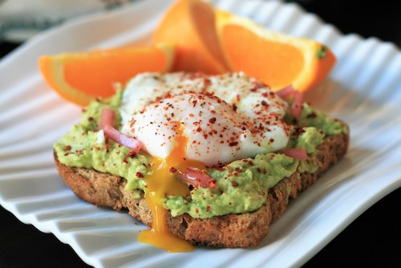

Egg and Avocado Toast

Description
Avocado Toast with Eggs is a simple recipe that
that can be made for breakfast. Even though it seems like
it will not make you full, becuase of the amount, it will indeed.
Avocados are a healthy fat and eggs have a good amount of protein
and those too are great and healthy ways to get someone full.
Ingredients
- 1 slice of toast
- 2 eggs
- 1/2 avocado
- 1 slice of lime
- 1 pinch of salt
- 1/4 crushed red peppers
Steps
- Get a slice of bread and toast it for as long as you like
- Then get 2 eggs, crack them in a bowl, whisk them and
cook them on a stove until your desired egg consistency
- Cut an avocado in half and take the innereds on the toast and mash it on the toasts
- Take the slice of lime and squeeze it on the avocado
- Sprikle a pinch of salt on the avocado
- Sprinkle the 1/4 crushed red peppers on the avocado
- Put your cooked egg on top of the avocado toast
Home Page